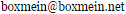

I do a lot of things. I'd mainly call myself a web developer, since that's what I do most, but other than web dev I'm alright in a lot of programming languages.
I'm a high school student from Estonia - after graduation going to a local university for this cool new course called "cyber-physical systems technology". Hope it'll be something awesome!
Below you'll find a collection of my work. If you want me to do something for you, you can email me at .
Projects
TPTElements
A website to gather information about The Powder Toy's scripting interface.
Source / Livemurder-mystery
A recent project to make a web app (usable on mobile) using Angular.js as well as angular-material.
Source / Livescript-server
Another recent project. This is a mostly client-side app to manage Lua scripts made for The Powder Toy.
Source / Livelinks-not-for-robots
A web server that acts as a link shortener (which doesn't actually make links any shorter) to hide URLs behind a CAPTCHA. The link itself is stored inside the URL, meaning there is no server- side database to keep track of links.
Source /desktop-lightbox
A spartan image viewer without unnecessary features. It'll display all sorts of images, and that's about it.
Plays animated GIFs on the desktop! :D
Source / v1.0inmake
"Inline Make" - a way to keep short build commands inside the source files themselves.
Supports various usage modes, including regex matching. Excellent with Sublime Text.
SourceOther Websites
Some other websites you can find me on.
Stuff
Here's a bunch of things that don't really classify as projects:
- Fireworks
- GeoSketch clone
- Google Maps Path Tracker
- Obligatory Matrix effect
- Pieslap
- Procedural City (shader playground)
- roll-a-ball Unity tutorial project implementation
- Three.js playground
- Torrent roulette
- Wallpaper Slideshow
- Kind-of-rich-text editor
- Puzzle
- More puzzles (WIP!)
- Key shortcuts TPT uses (SVG interactivity)
- TPT Package Maker
Articles
Here's a bunch of tutorials, or articles, or whatever.
- Making Powder Toy Custom Brushes
- Installing Powder Toy Script Manager
- ...more to come